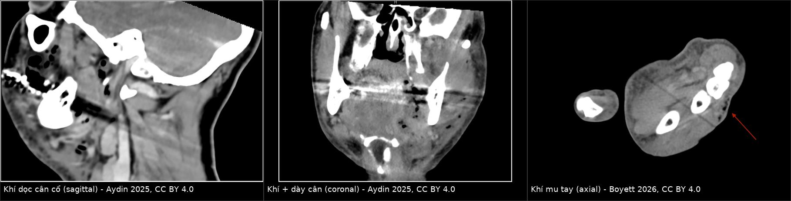
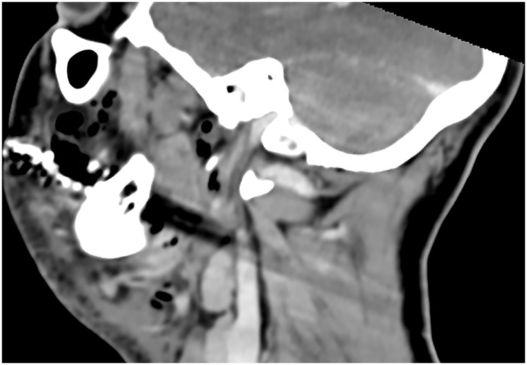
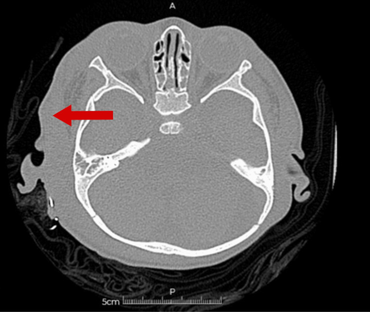
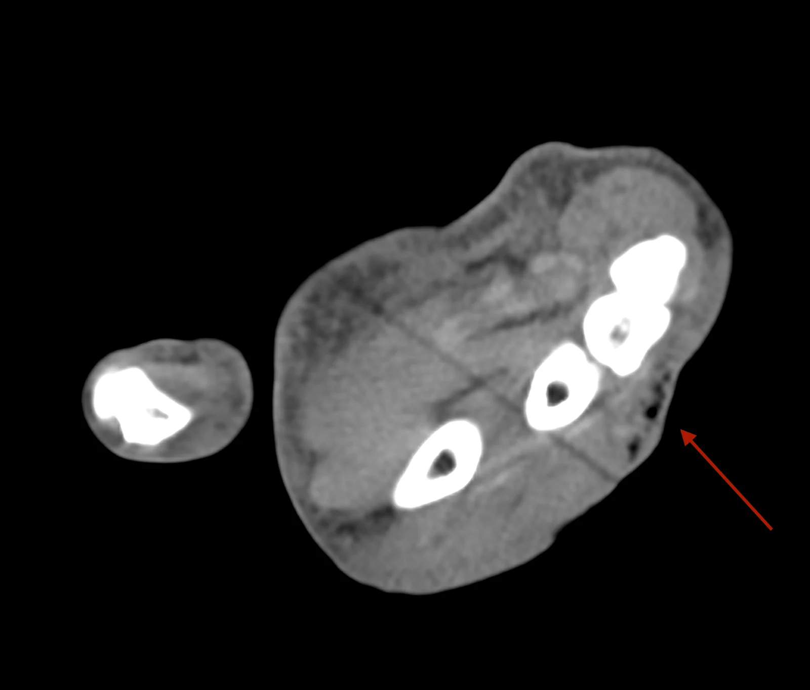

1986 — Viêm mô hoại tử ở trẻ: khi nào mổ KHÔNG chờ hình ảnh / Paediatric necrotizing fasciitis
Tags: pattern:khi-trong-mo-mem pattern:day-can pattern:khong-ngam-thuoc pattern:o-dich-mo-mem vung:mo-mem vung:co vung:chi score:LRINEC protocol:CT-co-can-quang
Mức chắc chắn (certainty): tổng hợp y văn (literature synthesis) — biên từ tổng quan Aydin 2025 (Oncoscience, PMC12723960, CC BY 4.0), ca lâm sàng Boyett 2026 (Cureus, PMC13592732), ca trẻ 9 tuổi (PMC11620763), ca 16 tháng đa ổ (PMID 40526874), ca mí mắt sau thủy đậu (PMC12538151) và ca trẻ ở nước đang phát triển (PMC12919948). Nhóm không có bệnh nhân của mình.
Câu chốt: viêm mô hoại tử (necrotizing fasciitis, NF) là cấp cứu ngoại khoa theo giờ, không phải theo ngày. Hình ảnh chỉ có một nhiệm vụ: tìm bằng chứng hoại tử cân để mổ sớm, chứ không dùng để loại trừ — khí trong mô mềm chỉ có ở một phần ca, và CT thiếu khí vẫn có thể là NF.
1. Tổng quan bệnh học – cơ chế hình ảnh (TẠI SAO)
1.1 Sinh lý bệnh: cân là "khoang áp lực thấp" không có tuần hoàn dự phòng
- Vi khuẩn (nhóm A Streptococcus, tụ cầu, vi khuẩn kỵ khí, Clostridium sinh khí) xâm nhập qua cửa vào da — ở trẻ nhỏ, thủy đậu (varicella) là cửa vào kinh điển; ở sơ sinh là viêm rốn (omphalitis); ở trẻ lớn là áp-xe răng/nhiễm trùng hô hấp trên.
- Độc tố (streptolysin, exotoxin) gây huyết khối vi mạch → cân và mô dưới da thiếu máu nuôi → hoại tử lan dọc mặt phẳng cân nhanh hơn nhiều so với lan ngang qua da. Vì vậy da bề mặt có thể "trông chỉ hơi đỏ" trong khi cân bên dưới đã hoại tử.
- Đau nhiều không tương xứng là do thiếu máu thần kinh nông; khi thần kinh đã chết, đau giảm và da mất cảm giác — dấu hiệu muộn, không phải dấu hiệu loại trừ.
1.2 Cơ chế hình ảnh: tại sao CT thấy dày cân, dịch và khí
- Dày cân (fascial thickening): phù viêm + thâm nhiễm tế bào làm cân dày; ngưỡng thực hành thường dùng là > 3 mm tại chỗ dày nhất (đo trên cửa sổ mô mềm).
- Dịch dọc cân (fluid tracking): mủ/phù lan theo mặt phẳng cân — biểu hiện là dải giảm đậm độ chạy dọc theo cân, khác với dịch khu trú trong một ổ áp-xe.
- Không ngấm thuốc (non-enhancing fascia): huyết khối vi mạch làm vùng cân không tăng đậm độ sau cản quang — dấu hiệu hoại tử, mạnh hơn "dày cân" đơn thuần.
- Khí trong mô mềm: chỉ sinh ra khi có vi khuẩn sinh khí (điển hình Clostridium, một số E. coli/kỵ khí). Vì vậy khí chỉ gặp ở khoảng 20–50% ca (các loạt khác nhau, chưa thống nhất) — không có khí KHÔNG loại trừ NF. Ngược lại, ở vùng đầu–cổ, vi khuẩn sinh khí ít gặp hơn ở chi/thân nên khí càng hiếm (Aydin 2025).
- Đậm độ khí trên CT: khoảng −1.000 HU (đen tuyệt đối), dễ nhận hơn nhiều so với khí lẫn trong mô viêm; khí trong bao khớp/cạnh khớp hoặc dưới da do chấn thương là các bẫy quen thuộc.
1.3 Ngưỡng định lượng cần nhớ
- Tử vong nội viện của NF nói chung: 11–30%, cắt chi 7–22% (phân tích toàn quốc Đức 2019–2024, PMID 42384437).
- NF vùng đầu–cổ: < 5% tổng số NF, nhưng tử vong 10–30% (Aydin 2025, PMC12723960).
- NF ở trẻ: hiếm; tử vong thấp hơn người lớn nhưng chưa có con số thống nhất — chưa rõ, cần tra (các đoàn hệ nhi đều nhỏ).
- Mỗi giờ chậm mổ đều làm tăng tử vong; mổ lại trong 24–48 giờ là quy tắc, không phải ngoại lệ (Aydin 2025).
2. Mẫu hình + chẩn đoán phân biệt theo vị trí (gamut)
- Chi (hay gặp nhất ở trẻ): NF chi thể · viêm mô tế bào (cellulitis) · áp-xe cơ/cân · viêm cơ (pyomyositis) · viêm cân hoại tử sau chấn thương/tiêm.
- Đầu–cổ: NF cổ–mặt (nguồn răng, hầu, tuyến mang tai) · viêm khoang cổ sâu/áp-xe · Ludwig angina · hạch viêm · viêm tuyến mang tai.
- Thành bụng – rốn: NF thành bụng (sơ sinh: viêm rốn) · áp-xe thành bụng · tụ máu bao cơ thẳng · thoát vị nghẹt.
- Tầng sinh môn: Fournier · áp-xe tuyến Bartholin/ống hậu môn · viêm mô tế bào.
- Mẫu hình "khí trong mô mềm" (không chỉ NF): NF · viêm mô tế bào sinh khí · áp-xe sinh khí · khí do chấn thương/can thiệp (vết thương hở, sau tiêm, sau mổ) · khí từ tạng rỗng vỡ (thực quản, ruột) · khí trong bao khớp sau vết thương · khí do oxy áp lực cao/thiết bị.
3. Bảng so sánh phân biệt (ma trận đối chiếu)
| Thực thể (entity) | Hình ảnh điển hình (CT có cản quang) | Chốt vào (rule-in) | Chốt loại (rule-out) | Gợi ý xác nhận |
|---|---|---|---|---|
| Viêm mô hoại tử (NF) | Dày cân > 3 mm + dịch dọc mặt phẳng cân + khí (20–50%) + cân không ngấm thuốc | Khí dọc cân + dày cân + đau không tương xứng + nhiễm độc | Không có khí / CT sớm bình thường KHÔNG loại trừ | Mổ thăm dò + cấy; CT chỉ để định mức lan |
| Viêm mô tế bào (cellulitis) | Dày mô dưới da, phù dạng lưới, không có dịch dọc cân, cân ngấm thuốc bình thường | Phù nông, không khí, không tụ dịch | Dịch dọc cân + cân không ngấm = nghi NF | Đánh dấu ranh giới da + theo dõi 4–6 giờ |
| Áp-xe mô mềm | Ổ dịch khu trú có vỏ ngấm thuốc, có thể có khí trong ổ | Ổ dịch khu trú + vỏ ngấm thuốc | Dịch lan dọc cân không vỏ = không phải áp-xe đơn thuần | Chọc hút/dẫn lưu |
| Viêm cơ (pyomyositis) | Cơ sưng, giảm đậm độ, ngấm thuốc không đều, có thể áp-xe trong cơ | Tổn thương trong cơ, cân còn ngấm thuốc | Tổn thương cân + mô dưới da là chính = NF | MRI/SA + cấy dịch cơ |
| Khí mô mềm do chấn thương/can thiệp | Khí dọc đường vào, không dày cân, không dịch, bệnh nhân không nhiễm độc | Bối cảnh chấn thương/thủ thuật + khí đơn thuần | Sốt + đau tăng + CRP cao + dày cân = không quy cho chấn thương | Hỏi bệnh sử + theo dõi 6–12 giờ |

Trái: khí dọc cân cổ (mặt cắt dọc). Giữa: khí + dày cân (mặt cắt vành). Phải: khí mu tay (mặt cắt ngang, mũi tên đỏ). Ảnh ghép letterbox, giữ nguyên tỉ lệ — nguồn và giấy phép từng ảnh trongimages/CREDITS.md.
4. Protocol chụp + hệ phân độ/điểm chuẩn hóa
4.1 Protocol CT (không chờ MRI)
- CT có cản quang tĩnh mạch là lựa chọn đầu tay ở cấp cứu: nhanh, rộng, phát hiện khí, dày cân, dịch dọc cân, mất ngấm thuốc (Aydin 2025).
- Lát mỏng 1–2 mm, cửa sổ mô mềm; phủ toàn bộ vùng sưng + một khớp ở trên và dưới để không bỏ sót lan dọc.
- MRI có độ tương phản mô mềm tốt hơn nhưng chậm và khó tiếp cận trong cấp cứu → không dùng để trì hoãn mổ.
- Siêu âm có thể thấy dày cân/dịch nhưng không loại trừ và phụ thuộc người làm.
- X-quang chỉ thấy khí khi đã muộn — không dùng để quyết định.
4.2 LRINEC — dùng đúng, đừng tin tuyệt đối
| Biến | Ngưỡng | Điểm |
|---|---|---|
| CRP | ≥ 150 mg/L | 4 |
| Bạch cầu | 15–25 × 10⁹/L | 1 |
| Bạch cầu | > 25 × 10⁹/L | 2 |
| Hemoglobin | 11–13,5 g/dL | 1 |
| Hemoglobin | < 11 g/dL | 2 |
| Natri | < 135 mmol/L | 2 |
| Creatinin | > 141 µmol/L | 2 |
| Glucose | > 10 mmol/L | 1 |
- Tổng ≥ 6 = nguy cơ cao; ≥ 8 = nguy cơ rất cao. Trong nghiên cứu ban đầu, ≥ 6 có giá trị dự báo dương ~92%.
- Hạn chế: độ nhạy giảm ở giai đoạn sớm, ở trẻ nhỏ, và đặc biệt ở vùng đầu–cổ (Aydin 2025) → LRINEC < 6 KHÔNG loại trừ NF; điểm số không được thay thế quyết định mổ.
flowchart TD
A[Đau nhiều không tương xứng + sưng lan nhanh + sốt] --> B[CT có cản quang lát mỏng 1-2 mm]
B --> C{Có khí dọc cân, dày cân > 3 mm, hoặc cân không ngấm thuốc?}
C -->|Có| D[Mổ thăm dò NGAY - không chờ cấy]
C -->|Không| E{LRINEC >= 6 hoặc lâm sàng nhiễm độc?}
E -->|Có| D
E -->|Không| F[Theo dõi sát 4-6 giờ + đánh dấu ranh giới da + chụp lại nếu lan]
D --> G[Cấy + kháng sinh phổ rộng + mổ lại 24-48 giờ]
5. Biến thể bình thường và cạm bẫy
- Khí sau chấn thương/tiêm/sau mổ là bẫy hay gặp nhất: khí đơn thuần, không dày cân, không dịch ở trẻ tỉnh, không sốt → theo dõi; nhưng không được dùng bối cảnh chấn thương để giải thích mọi khí khi có sốt và đau tăng.
- CT sớm bình thường: trong 6–12 giờ đầu, phù và khí có thể chưa đủ để thấy → âm tính không loại trừ; bệnh nhân nghi ngờ cao phải mổ thăm dò.
- Không có khí: nhớ 20–50% ca NF không có khí; đừng chờ khí mới mổ.
- Da "trông nhẹ": đỏ nhẹ + đau dữ dội + sốt là tam chứng nguy hiểm; ngược lại da tím/bóng nước là dấu hiệu muộn.
- Satisfaction of search: thấy một ổ áp-xe rõ ràng không được dừng lại — phải đọc toàn bộ mặt phẳng cân lân cận và các khoang xa (trung thất, hốc mắt, khoang dưới móng).
- Trẻ nhỏ không mô tả được đau: thay bằng khóc khi chạm, không chịu cử động chi, bỏ ăn, li bì — giá trị cao hơn "đau không tương xứng" ở người lớn.
6. Tự lượng giá — Blind Quiz
Ca 1 — Trẻ 9 tuổi, sốt 2 ngày, sưng đau vùng cổ bên, đầu cổ hơi nghiêng. CT có cản quang mặt cắt dọc:

- Gợi ý: không chấn thương, không răng sâu rõ; CRP 210 mg/L, bạch cầu 22 × 10⁹/L.
- Hỏi: có bao nhiêu loại khí/dịch bất thường? Chúng nằm ở khoang nào? Ba chẩn đoán phân biệt và dấu hiệu nào buộc mổ ngay?
Bấm để hiện đáp án (findings + chẩn đoán)
- Dấu hiệu: nhiều ổ khí đen (−1.000 HU) rải dọc mặt phẳng cân sâu vùng cổ, kèm dày cân và dịch chạy dọc từ trên xuống; không có vỏ ổ áp-xe.
- Chẩn đoán: viêm mô hoại tử cổ–mặt (cervicofacial NF) — khí + dày cân + dịch dọc cân là bộ ba chốt.
- Vì sao mổ ngay: dịch lan theo mặt phẳng cân (không khu trú) + nhiễm độc + đường thở sát bên → mổ thăm dò + cấy + kháng sinh phổ rộng, đồng thời bảo vệ đường thở.
- Nguồn: Aydin et al. 2025, Oncoscience, Fig. 1, PMC12723960, CC BY 4.0.
Ca 2 — Trẻ 4 tuổi, sau thủy đậu 5 ngày, sưng đau trên ổ mắt phải, CT sọ không cản quang:

- Hỏi: mũi tên đỏ chỉ cái gì? Vì sao vùng giảm đậm độ này quan trọng hơn "phù mô mềm" thông thường? Cần làm gì tiếp?
Bấm để hiện đáp án (findings + chẩn đoán)
- Dấu hiệu: vùng giảm đậm độ trong mô dưới da vùng thái dương–trên ổ mắt, bờ không rõ, kèm phù mô mềm lan rộng — tương ứng dịch/hoại tử dọc cân, không phải ổ áp-xe có vỏ.
- Bối cảnh thủy đậu là cửa vào kinh điển của NF do tụ cầu/liên cầu ở trẻ.
- Chẩn đoán: NF vùng thái dương–quanh ổ mắt (thể hiếm); cần CT có cản quang + hội chẩn ngoại khoa ngay, không chờ đỡ phù.
- Nguồn: Cureus 2026, Fig. 1, PMC12919948, CC BY 4.0.
Ca 3 — Trẻ 12 tuổi, vết xước mu tay 3 ngày, mu tay sưng đau, không sốt cao. CT không cản quang:

- Hỏi: mũi tên đỏ chỉ gì? Khí này có đủ chẩn đoán NF không? Nếu bệnh nhân chỉ đau vừa và không sốt thì xử trí khác thế nào?
Bấm để hiện đáp án (findings + chẩn đoán)
- Dấu hiệu: các ổ khí nhỏ dưới da mặt mu tay (mũi tên đỏ), kèm phù mô mềm; không thấy dày cân rõ.
- Khí đơn thuần không đủ chẩn đoán NF — phải đọc cùng dày cân, dịch dọc cân, mất ngấm thuốc và bệnh cảnh nhiễm độc. Ca này là khí mô mềm sau vết thương; nếu đau tăng nhanh + sốt + CRP cao thì đổi hướng sang NF và mổ thăm dò.
- Nguyên tắc: khí là dấu hiệu định hướng, không phải tiêu chuẩn vàng; quyết định mổ dựa trên diễn tiến lâm sàng theo giờ.
- Nguồn: Boyett et al. 2026, Cureus, Fig. 6, PMC13592732, CC BY 4.0.
Bài liên quan chéo
- 730 – Nhiễm trùng khoang cổ sâu (NF cổ–mặt vs áp-xe khoang cổ)
- 370 – Nhiễm trùng cơ xương (viêm cơ, áp-xe cơ)
- 1794 – Sốc độc tố tụ cầu/liên cầu ở trẻ (bệnh cảnh nhiễm độc)
- 649 – Khí trung thất hoại tử ở trẻ (khí do nhiễm khuẩn sinh khí)
Không dùng để chẩn đoán độc lập khi chưa có người hướng dẫn.